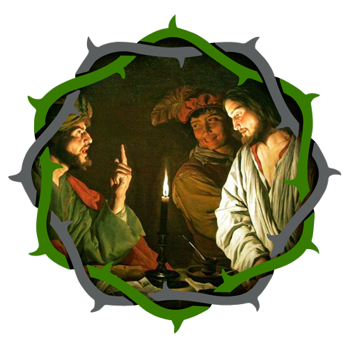

11:00pm- Jesus is taken before Caiphas and receives a blow in the face

My sweetest Jesus, declared by the council of the Jews guilty of death, and in the house of Caiaphas blindfolded with a piece of cloth, and then buffeted, spat at, and derided, have mercy on us.